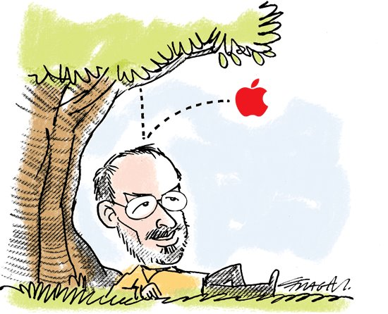

Essa é uma pequena biografia de Pedro Rafael
Pessoal:
- 27 anos;
- Natural de Goiatuba-GO e morando em Goiânia desde 2008;
- Solteiro \o/.
Formação Acadêmica:
- Estudante de Sistemas de Informação - UFG;
- Conclusão para 2018-1 ('Tamo' na luta).
Hobbies:
- Desmontar tudo que tenha parafuso (e nem sempre conseguir montá-los de volta);
- Conhecer tudo sobre Carros;
- Leitura.
Por fim...
Se você que esta lendo isso tem uma vaga em sua empresa - ou na que trabalha - para área de Projetos, ME CONTRATE !!!
Experiência nada :( , mas vontade tem de sobra !!!

"As pessoas que são loucas o suficiente para achar
que podem mudar o mundo são as que, de fato, mudam." - Jobs
by Pedro Rafael